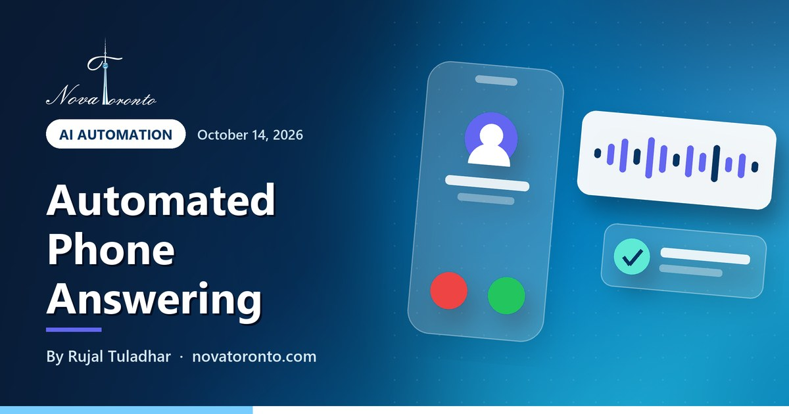

Automated phone answering for small business: what it costs in Canada
Published October 14, 2026 • By Rujal Tuladhar

If you run a small business in Ontario, you miss calls for ordinary reasons: you are with a customer, up a ladder, driving, or closed for the night. Automated phone answering means something picks up for you. There are three kinds, and they differ a lot in what the caller gets and in what you pay.
This post explains the three options, the prices on vendor pages I opened on October 12, 2026, how call forwarding works on Canadian carriers, what the privacy regulator says about recording calls, and a short checklist for choosing.
Three options
A phone menu with voicemail, a live answering service, or an AI receptionist
CDN$24.95 a user
Ooma's listed monthly starting price for a phone system with a menu included
$250 for 50 minutes
Ruby's smallest listed live receptionist plan; currency not named on the page
US$29 to US$349
Dialzara's listed monthly AI receptionist plans, 60 to 1,000 minutes
Tell callers first
The federal privacy regulator says to inform customers when a call is recorded
Automated phone answering for small business: what it costs in Canada at a glance — the short version.
The three options in plain terms
- Phone menu and voicemail. A recorded greeting plays, the caller presses 1 or 2, and the call rings a person or lands in a mailbox. Phone companies call this an auto attendant, an IVR or a virtual receptionist.
- Live answering service. Your calls forward to a call centre where a person answers in your business name, takes a message or transfers the call.
- AI receptionist. Software answers in a natural voice, replies to common questions, takes a message or books an appointment, and sends you a summary.
All three are automated from your side, because the phone gets answered without you. Only the first is a recording from the caller's side.
Phone menus and voicemail: the lowest cost
A menu usually comes with an internet phone system and is not sold on its own. Ooma's Canadian business page lists plans starting at CDN$24.95 per user per month with no contract, and includes a virtual receptionist that greets callers, directs them to the right person or department and answers questions such as directions and opening hours. Its pricing chart shows the next two plans at $29.95 and $34.95 in Canadian dollars.
The limit is what happens after the menu. A recording cannot answer a question you did not record, and it cannot book anything. If nobody is free, the caller still ends up in voicemail.
Live answering services: a person, billed by the minute or the call
Here a trained person answers. Listed prices on the two pages I could read:
- Ruby: $250 a month for 50 receptionist minutes, $395 for 100, $720 for 200 and $1,725 for 500. By my arithmetic that is $5.00 a minute on the smallest plan and $3.45 on the largest.
- Smith.ai: $300 a month for 30 calls, $810 for 90 and $2,100 for 300, with extra calls at $11.50, $10.50 and $8.50 each.
Neither page names its currency, so assume US dollars until a quote says otherwise. I also looked for published Canadian-dollar rates. AnswerConnect's sign-up page for Canada shows a quote form, not a price list, so expect to ask for a quote and to confirm the currency in writing.
AI receptionists: software that talks
Listed prices on October 12, 2026:
- Dialzara (priced in US dollars): $29 a month with 60 minutes, $99 with 220, $199 with 500 and $349 with 1,000. Extra minutes cost $0.48 down to $0.35.
- Rosie: $49 a month with 250 minutes, $149 with 1,000 and $299 with 2,000. Call transfers and appointment booking start on the $149 plan. The page says every plan answers 24/7.
- Goodcall: $79, $129 or $299 a month for 100, 500 or 2,000 unique customers. Minutes are not metered.
The Bank of Canada's daily rate for October 9, 2026 was 1.4271 Canadian dollars per US dollar. At that rate Dialzara's $29 plan is about C$41 and its $349 plan about C$498, before tax and any card conversion fee.
For a longer price comparison, see what an AI receptionist costs in 2026. For what the software does day to day, see how small businesses benefit from an AI receptionist.
How call forwarding works with Canadian carriers
With a live service or an AI receptionist you keep your existing number. The vendor gives you a second number, and you forward calls to it. The useful kind is conditional forwarding: your phone rings first, and the call moves on only if you are busy or do not answer.
- Bell business landline. Bell's support page lists *72 to forward every call (*73 to cancel), *90 to forward when the line is busy (*91 to cancel) and *92 to forward when nobody answers (*93 to cancel). The no-answer version forwards after four rings. Bell notes the busy feature depends on your line and voicemail set-up.
- Rogers wireless. Rogers lists *21*, the ten-digit number, then # to forward every call; *67* for busy; *61* for no reply; and *62* for not reachable. To cancel, dial ##21#, ##67#, ##61# or ##62#. Rogers adds that conditional forwarding will not work when voicemail is activated.
Codes and conditions differ by carrier and plan, so confirm yours with your provider.
Call recording and consent in Canada
Many answering tools record or transcribe calls. This is general information, not legal advice.
The Office of the Privacy Commissioner of Canada's guidance on recording customer calls under PIPEDA, the federal private-sector privacy law, says an organization must:
- inform the customer that the call is being recorded;
- record only for purposes a reasonable person would consider appropriate, and state them clearly;
- obtain consent, which may be implied if the customer carries on after being told;
- offer an alternative if the caller objects and recording is not integral to the service.
Separately, section 184 of the Criminal Code makes it an offence to knowingly intercept a private communication, with an exception where the originator or the intended recipient consents, expressly or by implication.
A short checklist for choosing
- Count first. Log missed, after-hours and busy-line calls for two weeks.
- Name the outcome. A message, an answer or a booking? A menu gives you routing only.
- Check the unit. Minutes, calls or unique customers. Work out the price at your own volume, including overage.
- Confirm the currency. Most pages I read show a dollar sign without saying which dollar.
- Test forwarding. Make sure your carrier plan supports forwarding on busy and on no answer.
- Plan the handoff. Decide when a call should reach a person and how you get the message.
- Write the recording notice. Put it in the greeting before you go live.
Nova Toronto sets up AI receptionists for GTA businesses, including the forwarding and the greeting. To learn the basics first, the free AI course for beginners takes seven short lessons.
The bottom line
A phone menu is the cheapest way to sort calls, but it still ends in voicemail when nobody is free. A live answering service puts a person on the line and costs several dollars a minute at listed rates. An AI receptionist answers every call at a much lower listed price and can book or take messages, but you should hear one before trusting it with your customers. Whichever you pick, keep your number, forward on busy and no answer, and tell callers if they are recorded. To hear an AI receptionist on your own call types, book a free consultation.
Common questions
What is automated phone answering for a small business?
It is any set-up that answers your business line without you picking up. The three common kinds are a phone menu with voicemail (an auto attendant or IVR), a live answering service where a person answers in your business name, and an AI receptionist, which is software that talks to the caller, answers common questions and takes a message or a booking.
How much does an automated phone answering service cost in Canada?
On pages read on October 12, 2026: Ooma's phone system with a built-in menu starts at CDN$24.95 per user per month. Ruby's live receptionist plans run from $250 for 50 minutes to $1,725 for 500 minutes. AI receptionist plans at Dialzara run from US$29 to US$349 a month. Ruby does not name its currency, so confirm it before you compare.
Can I forward my business calls to an answering service and keep my number?
Yes. You keep your number and forward calls to a number the service gives you. Bell lists *72 for all calls, *90 for busy and *92 for no answer on business lines. Rogers lists *21*, *67* and *61* followed by the number and # on wireless. Features vary by plan, and Rogers says conditional forwarding will not work when voicemail is activated.
Is it legal to record customer calls in Canada?
The Office of the Privacy Commissioner of Canada says a business must tell the customer the call is being recorded, record only for appropriate and clearly stated purposes, and obtain consent, which may be implied if the caller continues after being told. Callers who object should be offered an alternative where recording is not integral to the service. This is general information, not legal advice.
Want this working in your business?
Book a free 15-minute call and we'll map out which of these would actually save you time and win you customers.
Book a Free ConsultationNew to AI? Take our free 7-lesson AI course for beginners.
Sources: Ooma Canada: Business VoIP phone service • Ooma Canada: Ooma Office pricing chart • Ruby: Pricing • Smith.ai: Virtual receptionist pricing • AnswerConnect: Plans (Canada sign-up) • Dialzara: Pricing • Rosie: Pricing • Goodcall: Pricing • Bank of Canada: Daily exchange rates • Bell Business: How to use call forwarding • Rogers: Codes for call forwarding on a wireless device • Office of the Privacy Commissioner of Canada: Recording of customer telephone calls • Justice Laws Website: Criminal Code, section 184